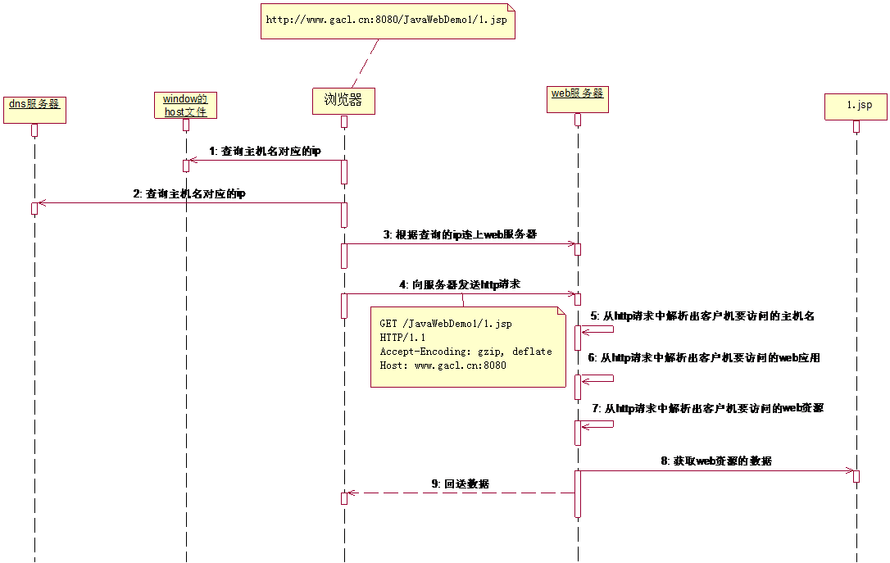
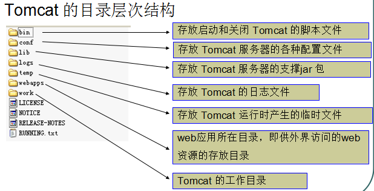
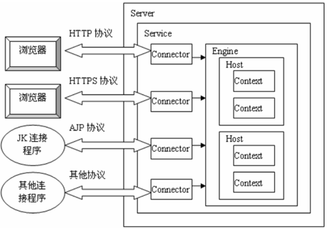
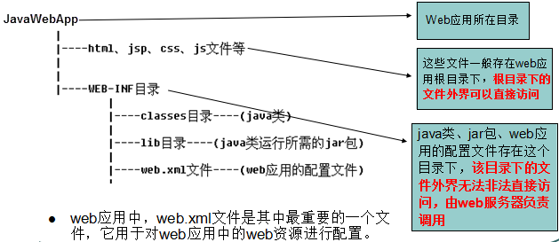

前言（后加）
本文是笔者最初入门web时，所写的笔记。时隔多日，打算将此放上博客。虽然，现在看来，其中内容十分简单，但也算笔者曾经的天真。
注：本文内容大多是阅读一位大神博客所总结的。
一、JavaWeb初识
1.JavaWeb，指用java为编程语言的Web后端。
2.服务器，一台高性能的电脑主机。
3.静态与动态Web：
- 静态Web。如HTML网页，无法与用户交互，网页数据始终一样
- 动态Web。Web的页面展示效果因时因人而变。如 JSP、PHP、ASP即可实现动态web。
二、客户端与服务器的交互机制
如下图：

三、互联网的加密原理
分为对称加密和非对称加密。
四、Http协议
1.Http请求消息
1.1客户端连上服务器后，向服务器请求某个web资源，称之为客户端向服务器发送了一个HTTP请求。一个完整的HTTP请求包括如下内容：一个请求行、若干消息头、以及实体内容
1.2请求行中的GET称之为请求方式，请求方式有：POST、GET、HEAD、OPTIONS、DELETE、TRACE、PUT，常用的有： GET、 POST。GET方式的特点：在URL地址后附带的参数是有限制的，其数据容量通常不能超过1K。如果请求方式为POST方式，则可以在请求的实体内容中向服务器发送数据，Post方式的特点：传送的数据量无限制
1.3HTTP请求中的常用消息头:
- accept:浏览器通过这个头告诉服务器，它所支持的数据
- Accept-Charset: 浏览器通过这个头告诉服务器，它支持哪种字符集
- Accept-Encoding：浏览器通过这个头告诉服务器，支持的压缩格式
- Accept-Language：浏览器通过这个头告诉服务器，它的语言环境
- Host：浏览器通过这个头告诉服务器，想访问哪台主机
- If-Modified-Since: 浏览器通过这个头告诉服务器，缓存数据的时间
- Referer：浏览器通过这个头告诉服务器，客户机是哪个页面来的 防盗链
- Connection：浏览器通过这个头告诉服务器，请求完后是断开链接还是何持链接
2Http响应消息
2.1一个HTTP响应代表服务器向客户端回送的数据，它包括： 一个状态行、若干消息头、以及实体内容 。
2.2状态行格式： HTTP版本号 状态码 原因叙述
举例：HTTP/1.1 200 OK
2.3HTTP响应中的常用响应头(消息头):
- Location: 服务器通过这个头，来告诉浏览器跳到哪里
- Server：服务器通过这个头，告诉浏览器服务器的型号
- Content-Encoding：服务器通过这个头，告诉浏览器，数据的压缩格式
- Content-Length: 服务器通过这个头，告诉浏览器回送数据的长度
- Content-Language: 服务器通过这个头，告诉浏览器语言环境
- Content-Type：服务器通过这个头，告诉浏览器回送数据的类型
- Refresh：服务器通过这个头，告诉浏览器定时刷新
- Content-Disposition: 服务器通过这个头，告诉浏览器以下载方式打数据
- Transfer-Encoding：服务器通过这个头，告诉浏览器数据是以分块方式回送的
- Expires: -1 控制浏览器不要缓存
五、Tomcat容器
1.Tomcat目录结构
如下图：

2.配置端口
2.1默认端口为8080
2.2如果想修改Tomcat服务器的启动端口，则可以在server.xml配置文件中的Connector节点进行的端口修改
3.设置虚拟目录映射
3.1在server.xml文件的host元素中配置
3.2！！！每次修改server.xml都要重启Tomcat
3.3加入<Context path="/My" docBase="F:\JavaWebDemoProject" />即可将在F盘下的JavaWebDemoProject这个JavaWeb应用映射到My这个虚拟目录上，My这个虚拟目录是由Tomcat服务器管理的，My是一个硬盘上不存在的目录，是我们自己随便写的一个目录，也就是虚拟的一个目录，所以称之为”虚拟目录”
4.Tomcat体系结构
如下图：

六、Servlet
一种用于开发动态web的技术：
